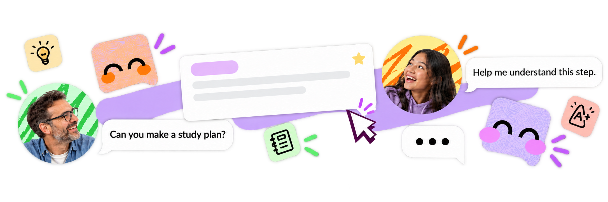
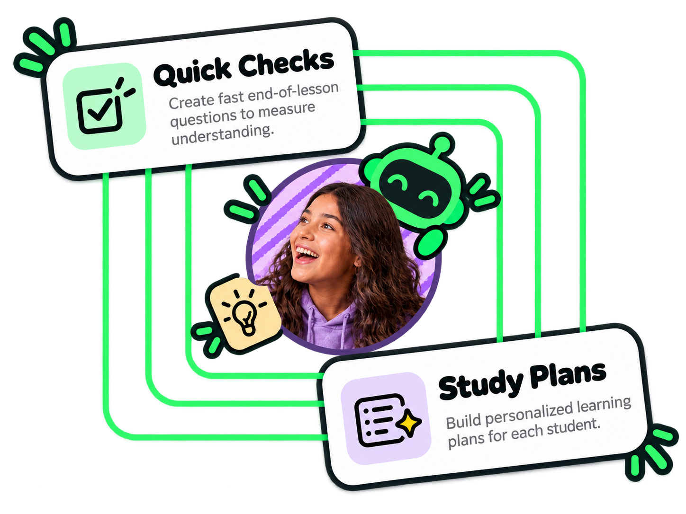
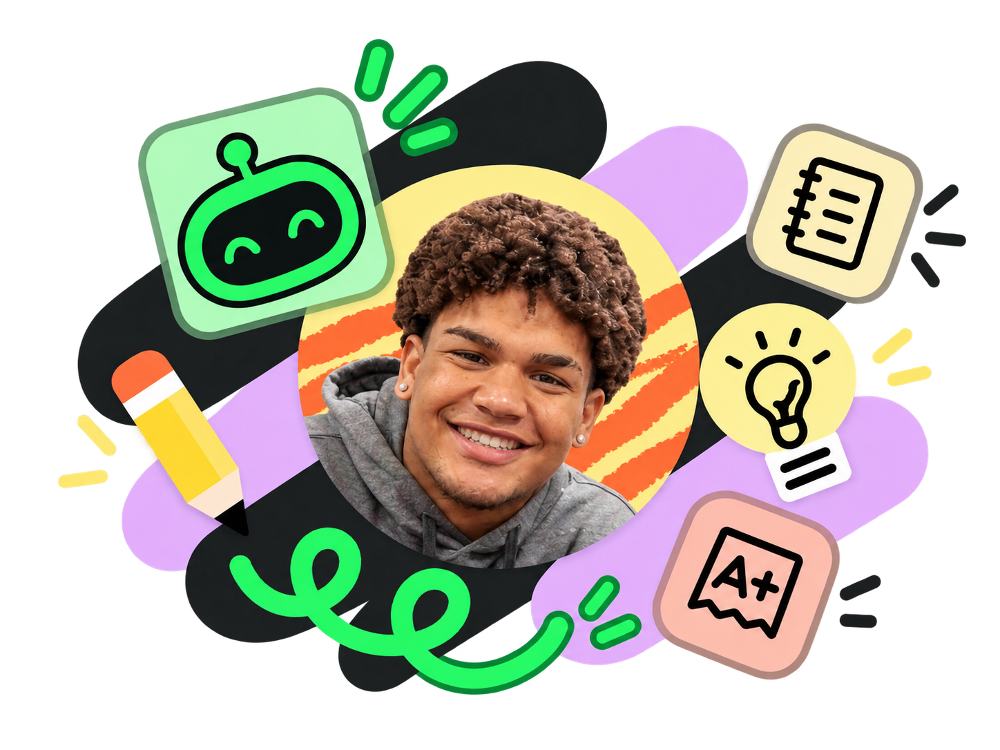
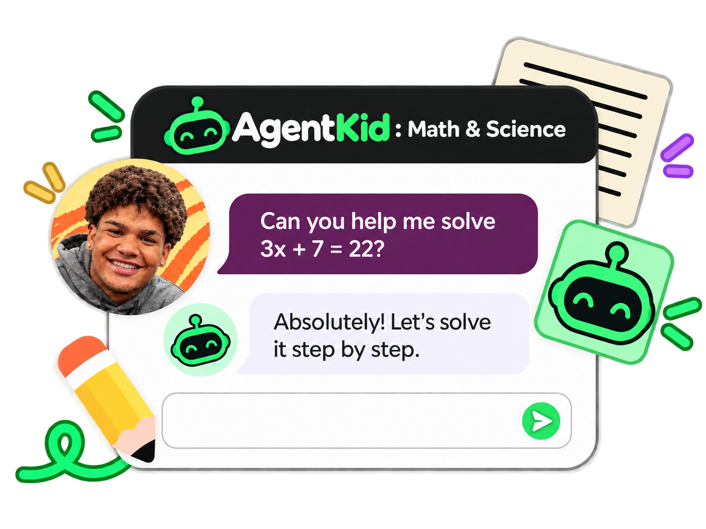

Những gì hệ thống ghi nhớ về trẻ đều hiển thị cho phụ huynh của trẻ đó, và phụ huynh có thể xoá.
Nguyên tắc thiết kế
Quyền riêng tư và memory
Quyền riêng tư và memory


Cho trẻ
Trò chuyện, bài học ngắn, routine và check-in cảm xúc
Cho phụ huynh
Theo dõi tiến trình, xem lại memory và kiểm tra cảnh báo an toàn
Cho quản trị viên
Quản lý nội dung bài học và routine trong một console
Kid Mode giữ mỗi ngày thật đơn giản: một đoạn trò chuyện ngắn, một bài học nhỏ, một bước routine và một lần check-in cảm xúc. Giao diện luôn nhẹ và dễ đoán để trẻ biết bước tiếp theo là gì.


Xem bài học đã hoàn thành, các bước routine, check-in cảm xúc và những session gần đây ở cùng một nơi. Mỗi hồ sơ trẻ thuộc quyền sở hữu của phụ huynh, và memory đã lưu có thể được xem lại hoặc xoá bất cứ lúc nào.
Các quy tắc an toàn xác định chạy trên cả tin nhắn của trẻ và phản hồi trước khi bất cứ nội dung nào được lưu. Nội dung rủi ro được thay bằng phản hồi an toàn và hiển thị cho phụ huynh dưới dạng cảnh báo an toàn.

AgentKid là trợ lý đồng hành học tập dành cho trẻ khoảng 6 đến 10 tuổi, do phụ huynh tạo và giám sát. Sản phẩm gom bốn hoạt động nhỏ, có cấu trúc rõ ràng vào một chỗ: trò chuyện nhẹ nhàng, bài học ngắn, routine hằng ngày và một lần check-in cảm xúc đơn giản.
Phụ huynh tạo hồ sơ cho trẻ, giữ quyền sở hữu dữ liệu và xem được những gì đã diễn ra. AgentKid được thiết kế như công cụ hỗ trợ cho nếp sinh hoạt hằng ngày — không phải sản phẩm y tế, chẩn đoán hay trị liệu.
Kid Mode cho trẻ bốn việc để làm, và chỉ có vậy:
— Trò chuyện: một đoạn hội thoại ngắn, nhẹ nhàng.
— Bài học ngắn: một bài nhỏ, đánh dấu hoàn thành khi xong.
— Routine: các bước của hôm nay, tích từng bước một.
— Check-in cảm xúc: trẻ gọi tên cảm xúc của mình, có thể kèm một ghi chú ngắn.
Trẻ không bao giờ thấy dữ liệu của trẻ khác và không thể thay đổi cài đặt tài khoản hay thanh toán.
Hồ sơ của trẻ thuộc về phụ huynh đã tạo hồ sơ đó. Phụ huynh xem được bài học, các bước routine, check-in cảm xúc, session gần đây và memory đã lưu của con — đồng thời có thể xoá memory hoặc xác nhận một cảnh báo an toàn.
Quản trị viên quản lý nội dung bài học và routine. Họ có thể đọc các bản ghi phát sinh từ trẻ, nhưng thao tác ghi lên dữ liệu của trẻ chỉ dành cho phụ huynh sở hữu, nên không gia đình nào tác động được lên dữ liệu của gia đình khác.
Trẻ không thể đọc hay tác động lên bản ghi của trẻ khác.
Không. AgentKid là công cụ hỗ trợ. Hệ thống không chẩn đoán bất kỳ tình trạng nào, không điều trị hay cải thiện tình trạng nào, và không thay thế phụ huynh, giáo viên, bác sĩ hay chuyên gia trị liệu.
Check-in cảm xúc chỉ là một thói quen tự ghi nhận nhẹ nhàng cho trẻ. Đây không phải phép đo lâm sàng, và AgentKid không khẳng định là biết chính xác cảm xúc thật của trẻ.
Nếu anh chị có lo ngại về sự phát triển hay tình trạng của con, hãy trao đổi với chuyên gia có chuyên môn.
AgentKid hướng tới trẻ khoảng 6 đến 10 tuổi, với phụ huynh quản lý tài khoản.
Sản phẩm có tiếng Anh và tiếng Việt. Chat vẫn hoạt động khi không có mạng nhờ phản hồi an toàn cố định, nên bốn hoạt động vẫn dùng được khi chưa cấu hình nhà cung cấp AI bên ngoài.
Tương tác giọng nói cho tiếng Việt của trẻ, nhận diện cảm xúc đa phương thức và chọn bài học thích ứng là hướng nghiên cứu, chưa phải tính năng đã phát hành.